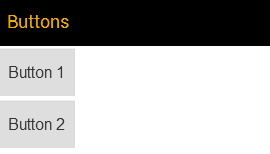
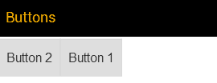

Getting Started With FlexBox
For a flexible box layout, create a FlexBox control and add any kind of controls to it.
You can either use the addItem method (see option 1), or the items aggregation of a configuration object (see option 2).
Option 1
var oMyFlexbox = new sap.m.FlexBox();
oMyFlexbox.addItem( new sap.m.Button({text: "Button 1"}) );
oMyFlexbox.addItem( new sap.m.Button({text: "Button 2"}) );
Option 2
var oMyFlexbox = new sap.m.FlexBox({
items: [
new sap.m.Button({text: "Button 1"}),
new sap.m.Button({text: "Button 2"})
]
});
The following figure gives an example how the result looks like if used inside a mobile app page. The necessary code is not shown here.

Layout properties
Some properties that affect the layout need to be set in the FlexBox control. Other properties can be attached to the controls which are placed inside the FlexBox by means of the layoutData aggregation. The layout direction, for example is set in the FlexBox as follows:
var oMyFlexbox = new sap.m.FlexBox({
items: [
new sap.m.Button({text: "Button 1"}),
new sap.m.Button({text: "Button 2"})
],
direction: "Column"
});The order is attached to the button inside a FlexItemData object as follows:
var oMyFlexbox = new sap.m.FlexBox({
items: [
new sap.m.Button({
text: "Button 1",
layoutData: new FlexItemData({order: 2})
}),
new sap.m.Button({text: "Button 2"})
]
});The controls that you place in the FlexBox control are each wrapped in a DIV or LI element, depending on the renderType property. All elements are placed inside another DIV or UL container, again depending on the renderType. If you use Bare as renderType, elements will be rendered without a wrapping HTML tag. The outermost element represents the so-called flex container while its child elements are flex items. The HTML structure resulting from all of the examples above looks as follows:
<div class="sapMFlexBox">
<div class="sapMFlexItem">
<button id="__button1">Button 1</button>
</div>
<div class="sapMFlexItem">
<button id="__button2">Button 2</button>
</div>
</div>